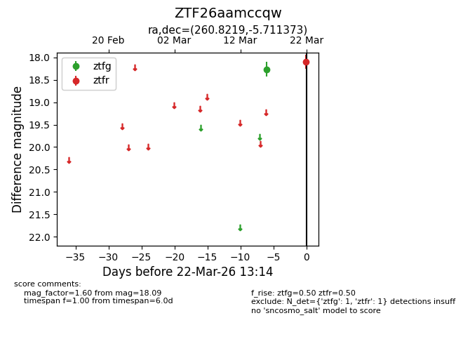
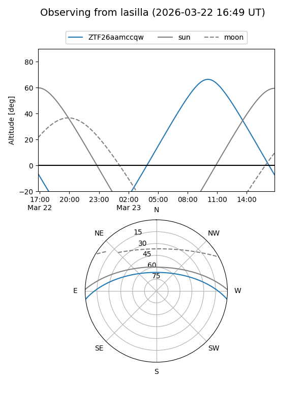
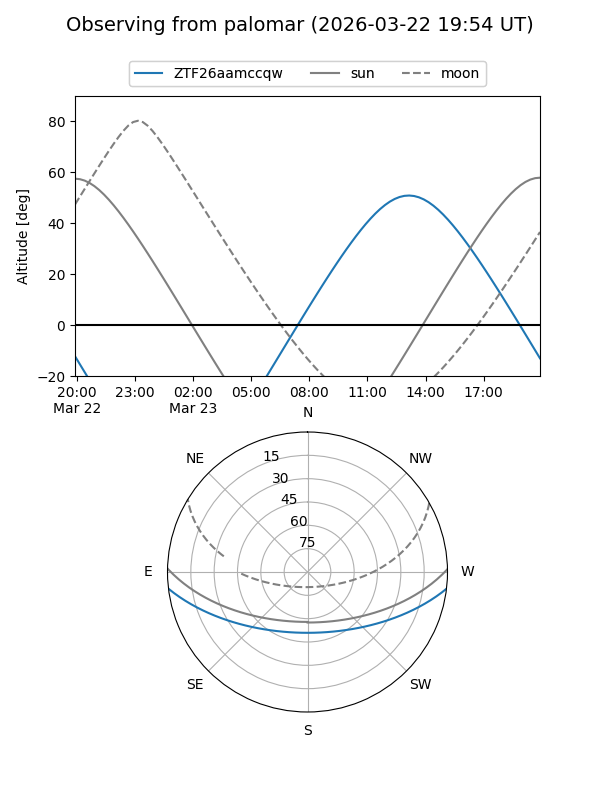

ZTF26aamccqw
Target ZTF26aamccqw at 2026-03-22 13:16
Aliases and brokers:
FINK: link
Lasair: link
ALeRCE: link
alt names
ZTF26aamccqw (ztf,fink_ztf)
Coordinates:
equatorial (ra, dec) = 260.8219,-5.71137
equatorial (HMS+DMS) = 17:23:17.25,-05:42:40.94
galactic (l, b) = (17.2576,+16.67252)
Flags:
Photometry:
last ztfg=18.26, ztfr=18.09
1 ztfg, 1 ztfr detections
Lightcurve

Visibility


Additional plots